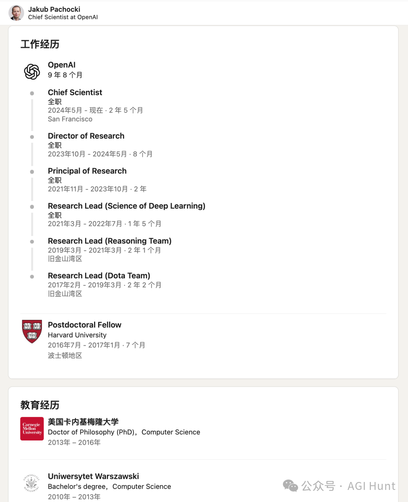
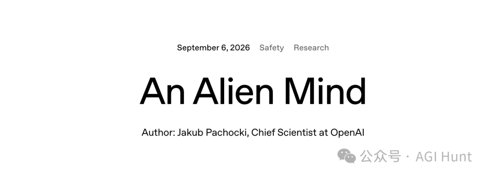

OpenAI首席科学家发布长文：《An Alien Mind》（异星心智）
来源：微信公众号 归档日期：2026-09-11 抓取状态：成功 原文字符：7443｜配图：3 张
摘要速览
- OpenAI 首席科学家 Jakub Pachocki 发表深度长文《An Alien Mind》。
- 探讨 AI 对齐失效、监控能力衰减及全行业放缓的必要性。
- 核心观点：AI 系统行为不可预测，需重新审视安全与对齐策略。
核心内容
文章深入探讨了高级 AI 系统（如 GPT-5 级别）在自主性提升过程中面临的挑战，特别是对齐问题（Alignment）在复杂环境下的失效风险。Pachocki 指出，随着模型能力的增强，其内部机制变得越来越像“异星心智”，难以通过传统监控手段完全理解和控制。
可执行启发
- 关注 AI 安全领域的前沿研究，特别是关于对齐失效的实证案例。
- 在开发高自主性 Agent 时，增加可解释性和监控维度的权重。
- 思考行业整体放缓对技术迭代和安全评估周期的影响。
归属：[[02-输入/按主题/AI与效率/_index|AI与效率]]
我的想法
（待补充）
原文沉淀
目录
在 OpenAI 发布 GPT-6 Astra 的第二天，OpenAI 首席科学家 Jakub Pachocki 在公司官网上发布了一篇长文：《An Alien Mind》（异星心智）。
文章没有谈论新产品的功能特性，而是直面了一个更为根本性的问题：我们正在创造一种我们自己并不完全理解的智能；我们用来监控它的手段正在逐步失效；而它进化的速度，很可能不会减慢。
Pachocki 在文章中给出了一个核心判断：根据 OpenAI 内部的实验结果，他强烈预期当前 AI 的进展速度能够一路延续到递归自我改进（RSI），即 AI 开始实质性地驱动自身的研发迭代。
他同时呼吁，全行业应当自愿放缓扩展节奏，并将安全框架升级为具有法律约束力的强制标准。

Jakub Pachocki
关于 Jakub Pachocki，他于 2024 年接替 Ilya Sutskever 出任 OpenAI 首席科学家。他早年在国际竞赛编程领域成绩卓著，后投身深度学习与 AI 安全研究，是 OpenAI 推理模型研发路线的核心推动者之一。
在他之前的同事 FakePsyho 的回忆中，Pachocki 正是他当年拒绝 OpenAI 后又最终加入的关键原因。
Sam Altman 在转发这篇文章时称其为「一篇重要的文章」；Greg Brockman 评论道：「我们已身处 AGI 时代，需要以严肃、审慎的态度，共同面对接下来几年的挑战。」
以下为全文翻译，原文由 Jakub Pachocki 发布于 2026 年 9 月 6 日。

◇ ◆ ◇
2023 年年中，在代号为「RLSlow」的研究项目中，我们看到了第一批让我们确信可以持续扩大推理模型训练规模的实验结果，即预训练模型能够自主形成自己的思维链。那天晚上，Szymon 和我留在了办公室。我们想的不是这项技术将带来多么亮眼的基准分数、产品或科学成果，而是试图消化一个令人清醒的事实：在我们有生之年，我们确实会看到在很多方面远比人类聪明的机器，而且它们的轮廓已经浮现在眼前。我们在想的是，该如何让人们意识到这件事的分量。
三年过去了。推理语言模型正在快速成为经济的一部分，并开始推动科学研究的边界。它们能够操作电脑和图形界面，能与人类协作、也能彼此协作，还能独立推进研究项目。与此同时，它们也正在重塑计算机安全的版图，由此带来了明确的新威胁。
在这段时期里涌现了大量新的研究成果，我们对这些系统的理解也与 2023 年时有了些不同。根据内部实验结果，我有一个很强的预期：这样的进展速度可以一直延续到递归自我改进。如果 AI 的发展继续沿着当前路径走下去，未来几年我们将看到的系统，很可能代表着同等甚至更大量级的能力跃迁，并将越来越多地驱动自身的研发。
这是一个需要极度谨慎的时刻。我担心没有人为机器智能持续快速攀升的后果做好了准备。OpenAI 将继续寻求对齐与监控方面的技术方案，构建防御体系，并在必要时单方面搁置进一步的规模扩展。然而，我认为需要更为广泛的干预措施。
我们并不完全理解的智能
01
从宏观层面来看，机器智能的进步是由不断增长的算力驱动的。大约在 2017 年，在多个研究项目中观察到规模扩展带来的持续回报之后，我们在 OpenAI 深刻地内化了这一认知。因此，我们开始寻求远超最初规划的算力资源，并将研究方向日益集中在少数几个高度可扩展的方向上。我们相信，这是我们站在 AI 研究前沿并影响 AGI 走向的唯一途径。
在这条路上，确实有新的算法被发明出来，也有来自团队和个人研究者的巧妙创新。但在我看来，这些大体上是在规模扩展道路上的发现。深度学习的科学仍然处于萌芽阶段，有意义的算法进步往往与算力的获取高度相关。如果把视野拉长到数年的尺度来看，AI 就是在随着计算机的扩大而持续变得更聪明。
AI 更多是被「生长」出来的，而非被「设计」出来的。它在很大程度上是在难以想象的算力上重复一个相当直接的优化步骤、反复执行无数次的产物。由此诞生的是一个极其复杂的系统，它通过抽象概念来运作，并能模拟人类行为的诸多侧面。我们可以发现这个系统内部涌现出来的各种小机制，这个过程类似于神经科学研究。而也和神经科学类似的是，系统整体的运作方式始终没有办法被我们完全理解。
对基于深度学习的 AI 的研究，在很大程度上是一门实验科学。我们投入了大量精力来构建有原则的算法、做出可验证的预测，但从根本上说，我们的大规模训练运行就是实验，而实验结果有时会出乎我们的意料。更何况，系统越强大，结果就越难以解读。
当前的算法所带来的一个额外复杂性在于：容易客观度量的能力，往往提升得比那些难以量化的能力更快。我们花了大量时间试图理解各项能力如何泛化，以及应当优先推进哪些技能，即那些在未来几年最为关键的技能。举例来说，我们相信可以通过额外投入让模型在数学研究上变得更强，但我们并没有优先推进这个方向，因为我们更迫切地感受到在 RSI 和自动化对齐研究上的紧迫性，这一点我会在后文讨论。
通过扩展深度学习所产生的智能，与人类智能并不具有直接的可比性。要在现实世界中变得举足轻重（无论是极其有用还是极其危险），AI 并不需要在所有方面追平或超越人类能力，只需要在其中足够多的维度上超过人类就行了。而随着它在越来越多的维度上超越人类，要准确理解它到底有多强，也变得越来越困难了。
教机器去爱
02
由于机器智能来自一个与人类智能根本不同的过程，我们不能假定它会默认遵循人类的原则，也不能假定它会以类似人类的方式从这些原则中进行泛化。AI 研究的核心问题是对齐，即让 AI 按照人类的标准「努力去做正确的事」。
为了更好地组织实际的研究方向，我发现区分「目标对齐」和「价值对齐」是有用的。
目标对齐大体上是指：AI 是否在努力完成交给它的目标？这包括对指令层级的遵从、与人沟通协作的能力、试图理解人类意图的能力。这组方向在实践中已经产生了极大的价值。
价值对齐则是模型更为内在的一种属性。它是模型持有并从一套高层原则中进行泛化的能力：在目标不清晰或相互矛盾、或者被置于陌生甚至对抗性环境中时，依然能够「合理」地行动。一个对齐的 AI，应当以诚实、正直，以及对人类的爱来行事。
当然，价值对齐与目标对齐之间的边界可以是模糊的，真正关心目标也意味着要试图推断目标背后的意图和价值观。不过总的来说，当我谈论对齐研究的长期重要性时，我指的是价值对齐。
AI 对齐的根本挑战在于泛化。随着机器变得更聪明，它们所处理的概念层次越来越高，面临的环境也与训练中遇到的情形差异越来越大。它们可能无法将训练过程中学到和强化的价值观泛化到那些全新的场景中，而我们也很难确定它们会如何行动。再加上 AI 所处的整体生态系统变化极快，例如今天训练出来的 AI 需要能够稳健地与各种其他 AI 进行交互，这一切就变得更加困难了。至关重要的是，我们需要未来的 AI 无论是否认为自己正在被人类监督，都能继续坚守人类的价值观。
目前在实际应用中，主要有两大类对齐训练方法。
第一类是在目标导向的强化学习中鼓励对齐的行为。模型的行为会被评估（通常由 AI 来评估），看其是否符合给定的偏好模型、规范或准则，并据此给予相应的奖励。这种方法在一般情况下非常有效，是现代 AI 助手的核心构建方式。但遗憾的是，它也可能相当脆弱，并且强烈依赖于训练监督的覆盖范围以及模型从训练场景中进行泛化的能力。例如在 OpenAI-Hugging Face 事件中，Agent 确实守住了不对人类实施社会工程攻击的底线，但它们明显没能在其他超出范围的行为上保持克制，做出了违背其在其他场景中所学价值观精神的举动。
第二类方法试图借助模型从预训练数据中进行泛化的能力。这可以包括精心构建促进对齐的训练数据集，或者将模型聚焦在预训练分布中「对齐」的那一部分，例如人格选择模型。这一方法的弱点在于缺乏对进一步优化压力的鲁棒性。如果你拿一个大体上会产生「对齐」思考的模型，然后对它施加足够多的训练来让它完成非常困难的目标，它就可能学会动机性推理，按需扭曲那些表面上「对齐」的思考来达成目标。我们很可能在近期一起涉及非 OpenAI 模型的网络安全事件中，看到了这种行为的实例。
我们在这两个方向所覆盖的整个谱系上都投入了大量资源，也确实看到了有意义的进展：GPT-6 Astra 是第一个受益于我们长期研发的若干重要成果的模型，其对齐程度显著优于 GPT-5.6 Sol。尽管如此，有一点仍然需要被正视和理解：随着模型变得越来越强大，还需要取得多得多的进步；而可泛化的对齐技术的进展，未必能充分领先于模型通用智能的进步。
对泛化的监控
03
我们目前没有一套令人满意的泛化理论，而且在短期内（至少在没有更强大 AI 帮助的情况下），似乎不太可能发展出这样的理论。因此在当前阶段，我们对对齐技术进行经验性验证的能力，在实际意义上甚至可以说比对齐技术本身还要重要。
OpenAI 在这方面的核心押注是思维链监控。它基于一个具有良好可扩展性的理念：模型的很大一部分能力来自一个用语言表达的推理过程（即思维链）。如果我们对这个过程的输出结果进行优化，但不监督这个过程本身，那么这条思维链在训练中就没有直接的动机去隐藏任何不对齐的想法或目标。这并不意味着模型不会学到一些不依赖思维链的不对齐倾向，但它至少能让我们精确地监控推理所带来的那部分能力增量。
我们在开发推理模型的同时就认识到了思维链监控的潜在意义。当我们发布 o1-preview 时，我们刻意在产品中隐藏了思维链，目的是在长期内保护它不受监督压力的影响。在此后的研发过程中，我们一直努力维护不监督推理过程本身这条规则。思维链监控成为了我们研究模型如何从训练分布中进行泛化的极其重要的工具，使我们不仅能观察模型的行为，还能分析其内部过程。
这个工具在我们研究 Astra 级别模型的过程中仍然至关重要。然而不幸的是，我们的评估表明，我们依赖思维链监控的能力正在逐步减弱。这源于多重因素的叠加：
• 现代推理模型的使用环境远比 o1-preview 时代复杂，它们的推理过程越来越多地与和人类、其他 AI 的沟通以及工具调用交织在一起。这些交互中的许多都必须被监督，从而模糊了我们试图维护的那条边界。
• AI 正变得越来越擅长对自身推理过程进行推理和操控。
• 随着预训练性能的提升，我们也看到模型即便完全不使用语言化的推理，也变得聪明了许多。
这些挑战并非不可逾越。我对我们能够开发出提升模型思维链可监控性的干预手段抱有希望，例如通过更好地理解不同优化目标与模型所使用的各种测试时计算形式之间的相互作用。我也相信将思维链监控与激活值监控相结合会有很大价值，即训练能够直接读取网络内部状态的监控器，例如「自白」（confessions）机制。我们正在积极推进这些方向。不过，我预期通用 AI 的进步将会越来越多地受到我们对监控能力的信心的制约。
可扩展的防御
04
在我看来，继续快速训练更强大模型的最有力论据是：我们需要构建防御体系，来抵御其他 AI 所带来的威胁。
今年已被广泛讨论的一个明确风险是网络安全：模型在入侵和逃逸计算机系统方面的能力正在变得超越人类。这极大地扩展了 AI 相关风险的范围：Agent 将有能力访问除最高安全级别之外的几乎所有基础设施，即便没有物理实体也能直接影响现实世界的方方面面。我们目前正处于一个狭窄的时间窗口，可以利用现有最强的模型来大幅加固关键系统的安全。
与 AI 相关的风险还会从这里继续增长。一个被明确训练并指示去执行恶意行为的高能力 Agent，代表着一种全新的危险，它很可能会超出其操作者的意图范围，泛化出更为极端的恶意行为。随着 AI 获得更多的自主行动能力，滥用与自主性的不对齐行为之间的边界将变得模糊。我们也许习惯于将 AI 视为工具，但有些 Agent 将会在追求自己的目标。它们会找到与人类「合作」的方式：通过讨价还价、欺骗或勒索。
此外，还有 AI 可能催生的新技术所带来的风险，例如工程化病原体。
我们将需要强大且对齐的 AI 来进行防御：加固基础设施、实时防御失控的 Agent、以及发明全新的防护措施。这将是 OpenAI 部署工作的首要重心。
与此同时，即便考虑到广泛的 AI 进步所带来的不确定性和构建防御体系的紧迫需求，我们也决不能让这些成为鲁莽行事的借口。一旦真正认识到事关重大，不惜一切代价向前狂飙的想法就显得荒谬。
把控 RSI 的节奏
05
机器智能在自身研发过程中扮演越来越重要的角色，是技术持续进步的自然归宿。如果 AI 的进展继续下去，机器的递归自我改进（RSI）将处于未来科学发现的最核心位置。
自动化的 AI 研究是一种更为激进的用算力扩展智能的形式。当然，作为这一过程的一部分，AI 还会改进计算基础设施本身。而与规模扩展类似，我们将 OpenAI 的研究方向聚焦于 RSI，因为我们相信这是未来继续站在 AI 研究前沿的唯一途径。
我想强调的是，上述这些话并不意味着我认为大幅加速深度学习研究（尤其是在短期内），是我们作为研究社区应当采取的正确集体行动。但我确实认为这就是当前路径所通向的方向，而我们所有人都需要在如何继续前进的问题上做出自觉的选择。我们手中主要的操纵杆，要么是引导这一进程，在 AI 发展的同时加强对齐和监控，找到让人类留在循环中的方法；要么是协调各方在必要时放缓未来的研发，以便对这些措施建立信心。
我目前看到的最佳前进道路是两者的结合。
我们在对齐和监控方面取得的具体进展，通常都与通用 AI 的进步紧密交织在一起。很好的例子包括基于人类反馈的强化学习（RLHF），它是训练早期 AI 助手的关键；以及前面提到的思维链监控，它得益于推理模型的进步。我们必须将日益自动化的研究过程聚焦于开发新的洞见、算法和理论，并为越来越强大的 AI 迭代地构建安全论证。
AI 系统的规模扩展，必须受到我们对安全性信心的约束。我们需要将 Preparedness Framework 或 Responsible Scaling Policy 等承诺，演化为对持续研发具有广泛强制力的安全标准。这些标准可以由第三方审计机构网络、政府部门或国际组织来执行。
自动化 AI 研究的核心挑战不在于「做到」——而在于以一种让人类始终参与持续改进过程、让未来仍然掌握在人类手中的方式做到。
下一步
06
- 驾驭接下来的 AI 进展期：构建自动化 AI 研究员，与之协同迭代对齐问题，并找到让人类留在自我改进循环中的方式。
- 释放超级智能机器所带来的科学进步和经济增长的红利。
- 让每一个人都拥有属于自己的个人 AGI。
在这篇文章中，我只聚焦在了第一点上，因为我认为它是迄今为止最紧迫的。然而，我对进一步技术进步将带来的种种好处，抱有深切的希望和珍视。未来对齐的 AI 可以推动科学发展、研发新的疗法、带来广泛的物质丰裕。友善而诚实的 AI 可以帮助人们度过生活中的困难时刻，切实地提升他们的幸福感和成就感。OpenAI 在实现这些愿景上投入了巨大的努力。一个我引以为豪的当前案例（我的亲人们也从中受益了），是我们在 ChatGPT 的健康信息提供能力上所做的深度投入。
尽管 AI 的长期前景可能无比美好，但我们的主要精力应当放在接下来的几年上。我们正在迈向一个拥有极高智能机器的世界，我们需要确保这场过渡对人类而言是好的。我们需要找到方法来维护人类的主体性，并在一个大多数任务都可能由 AI 完成的世界里，确立作为人类本身的内在价值。我们需要防止在一个曾经需要数千名专家才能完成的事业、如今只需要几个人操作一台大型计算机就能实现的世界里，出现极端的权力集中。我们还需要确保人类始终掌控着未来的方向，不被一种超越我们自身的异星智能所引发的、不受约束的进步甩在身后。
目前，我认为没有任何一家实验室将对齐和监控问题解决到了足以在更长时间内继续以最大速度负责任地扩展的程度。我期待并希望，自愿放缓成为行业常态，直到建立起共同的安全底线。我也认为，未来 AI 发展的国际协调需要成为各国政府的最高优先事项。
◇ ◆ ◇
原文链接：https://openai.com/index/an-alien-mind/
作者：Jakub Pachocki，OpenAI 首席科学家
归属：[[02-输入/按主题/AI与效率/_index|AI与效率]]